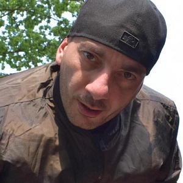

Dr. FUCHS(Tarık Gamert)
HAYATI
1978 yılında dünyaya gelen Rap dünyasının ünlü isimlerinden Dr. Fuchs gerçek ismi ile Tarık Gamert Almanya Regensburg doğumludur. Yay burcudur. Tilki ve Nefret aka Sihirbaz ünvanları ile tanınmaktadır. Tarık Gamert çok küçük yaşlarda babasını yitirmiştir. 1986 yılında doğduğu Almanya’dan Türkiye’ye dönmüştür. 1 Eylül 2014 tarihinde evlenen Tarık Gamert günümüzde ise yaşantısını ailesi ile birlikte Hollanda’da sürdürmektedir. Sıkı bir Beşiktaş taraftarı olan rapçi Dr. Fuchs aslen Rize, Derepazarı İlçesi nüfusuna kayıtlıdır.

KARİYERİ
Bakırköy'de arkadaşı Drop'la beraber Uçan Silahlar adında bir grup kurdu. O dönem jamlerde en çok boy gösteren, demolar yayınlayan, sert sözleriyle; undergroundda G-style'ı forse eden bir ekipti. Yayınladıkları bazı demolarda Karakan'a sert mesajlar gönderiyorlardı. Doksanların ortalarında İstanbul'daki underground hiphop camiasının kenetlenmesi neticesinde rap, graffiti ve breakdance gibi alanlarda faaliyet gösteren gruplarda bazı değişiklikler oldu. Eleman değişiklikleri, yeni grupların kurulması veya ortak çalışmalar yapıldı. İşte bu dönemin kritik olaylarından biri de Uçan Silahlar'da yaşandı. Atışma ringlerinde Ceza'yı keşfeden Fuchs, ona kendi grubunda rap yapma şansı verdi ve Ceza'yı da gruba dahil etti. Sonrasında Drop bazı özel sebepler yüzünden gruptan ayrıldı ve Uçan Silahlar dağıldı. 1998 yılında Fuchs, Ceza ile birlikte Nefret'i kurdu. Yeraltı Operasyonu adlı toplama albümde öne çıkmayı başardı. Grup 2000 yılında Meclis-i Ala İstanbul albümünü, 2001 yılında ise Nefret: Anahtar albümünü çıkardı. Fuchs, Nefret'teki başarısıyla hem grubun Türkiye çapında tanınmasını sağladı hem de hip-hop'ı gençlere sevdirdi. 2005'te kendi projesi olan İstanbul Attack'i hayata geçirmeye başladı (İstanbul Attack daha sonra faaliyete geçirildi) Yetenekli gençleri grubun bünyesinde toplayıp kendilerini geliştirme fırsatı verdi.
Fuchs, 2002 yılında askere gitti. Bu sırada Ceza, Sagopa Kajmer prodüktörlüğünde çıkardığı Med Cezir albümünü yayınladı. Sonrasında Nefret grubu dağıldı. 2004 yılında Sagopa Kajmer prodüktörlüğünde "Huzur N Darem" albümünü çıkaran Dr. Fuchs, lakabındaki Dr. ekini çıkardı ve Fuchs olarak sahne almaya başladı. 2005 yılında Sagopa Kajmer ve Ceza'nın arası bazı sorunlar nedeniyle açıldı. Fakat Fuchs bu kavgada kimseden yana taraf olmadı. Tüm bunlar yaşanırken daha öncesinde de aklında olan projesi İstanbul Attack'i hayata geçirdi. İstanbul Attack çatısı altında birleştirdiği MC'ler ile birlikte R&B tarzı şarkılar üretti. Ayrıca grup, Akıllı TV'de "Rapimi Dinle" adlı bir de program yapan grup, son olarak 1 Ocak 2008 tarihinde "Serkeş" adlı bir parça yayınladı. Bu arada solo çalışmalarına devam eden Fuchs birçok sinema ve reklam filmine soundtrack hazırladı. 2008 yılında "Selâm" albümünü piyasaya sürdü. 2009 yılında tekrar Ceza ile Nefret grubunu kurma kararı aldı fakat birleşme gerçekleşmedi. 2010 yılında "Çöl Tilkisi" adlı EP'sini piyasaya sürdü. 2012 yılında Massaka'nın albümünde Ceza ile Soğuk Mevsim adlı parçada buluştu. 2012 yılında yeniden "Dr." sıfatını mahlasına ekleyerek "Ne İstiyor (1. Cemre)" isimli parçasıyla mikrofonuna dönen Fuchs bu parçayı takiben Düşünceler (2. Cemre)'i yayınladı. Bireysel ve çoklu çalışmalarına devam eden Dr. Fuchs, Sagopa Kajmer'e barış çağrısında bulundu. 2013 yılında "Tilki Sound" isimli müzik stüdyosunu kurdu. 16 Haziran 2015'te Cemre serisinin son durağı olan Biliyor musun (3. Cemre) isimli parçayı internetten yayınladı ve Cemre serisine nokta koydu. Bu şarkıya istinaden 1 gün sonra eski dostu Sagopa Kajmer, Bilmiyorum isimli parçayı yayınladı. 20 Haziran 2015'te Dr. Fuchs, Bilmelisin isimli barış çağrısı içeren şarkısını yayınladı. Tüm Türkçe Rap camiası bu olaylarla hareketlenmiş fakat Sagopa Kajmer barış çağrısını geri çevirmiştir. 7 Ekim 2016'da kendi kurduğu Rhymeonmusic etiketiyle Her şeye Rağmen adlı albümünü çıkarmıştır. Verdiği demeçlerde 2017 yılı içerisinde ilki 2004 yılında çıkan Huzur N Darem albümünün ikincisi olan Huzur N Darem 2'yi çıkaracağını söylemiştir.
ALBÜMLERİ:
• 1999 Nefret Yeraltı Operasyonu ("Yeter Artık", "Ceza", "Doğanın Kanunu", "İntihar" parçalarıyla eşlik etmiştir.)
• 2000 Nefret Meclis-i Âlâ: İstanbul Nefret grubunun ilk solo albümüdür.
• 2001 Nefret Anahtar Nefret grubunun ikinci solo albümüdür.
• 2004 Dr. Fuchs Huzur N Darem Dr. Fuchs'un ilk solo albümü.
• 2006 İstanbul Attack İstanbul Geceleri İstanbul Attack'ın ilk solo albümüdür.
• 2008 Dr. Fuchs Selam Dr. Fuchs'un ikinci solo albümü.
• 2010 Dr. Fuchs Çöl Tilkisi EP Dr. Fuchs'un 7 parçalık EP albümüdür.
• 2012 Dr. Fuchs 1. Cemre (Ne İstiyor) (Single) Cemre serisinin ilk parçası.
• 2012 Dr. Fuchs 2. Cemre (Düşünceler) (Single) Cemre serisinin ikinci parçası.
• 2015 Dr. Fuchs 3. Cemre (Biliyor musun) Cemre serisinin son parçası. Dr. Fuchs'un uzun süre sonra çıkardığı single çalışmasıdır. Bu parçanın üzerine Sagopa Kajmer, Bilmiyorum adlı parçayı yayınlamıştır.
• 2015 Dr. Fuchs Bilmelisin Dr. Fuchs'un Sagopa Kajmer'in Bilmiyorum adlı parçasına karşılık barış çağrısı içeren single'dir.
• 2016 Dr. Fuchs Her Şeye Rağmen Dr. Fuchs'un üçüncü solo albümü.
• 2017 Dr. Fuchs Huzur N Darem 2 Dr. Fuchs'un dördüncü solo albümü.
• 2019 Dr. Fuchs Efsane 100 şarkılı bir albümdür. Albümün içerisindeki şarkılar teker teker yayınlanmaktadır. 2023 gibi albümün tamamlanacağı düşünülmektedir.
• 2020 Dr. Fuchs Durmam Dr. Fuchs'un Sir-Dav ve Zaman'la yaptığı düet single.